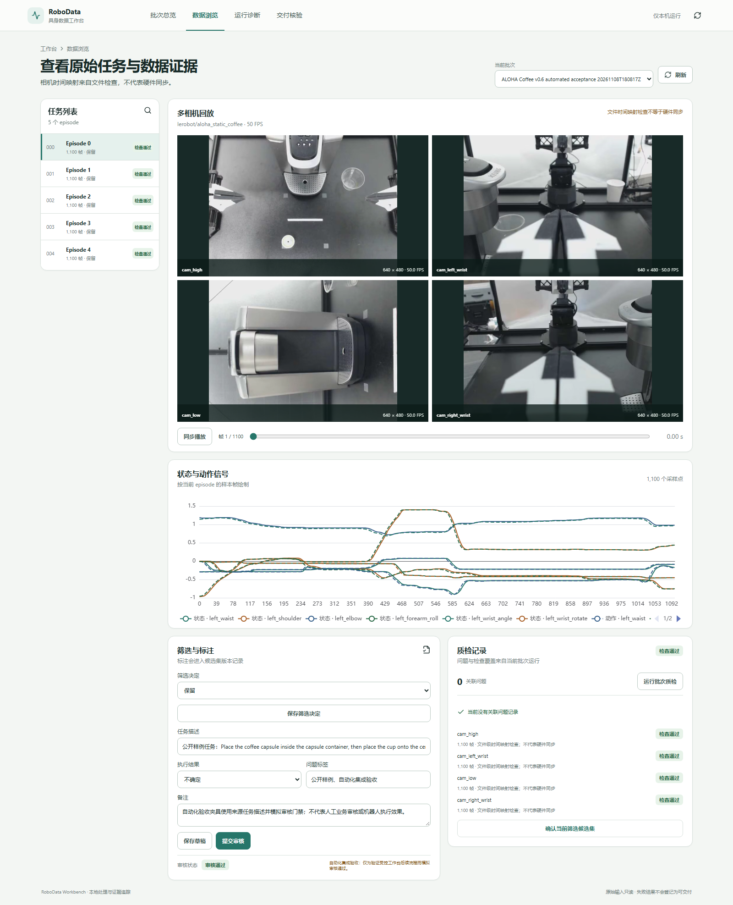
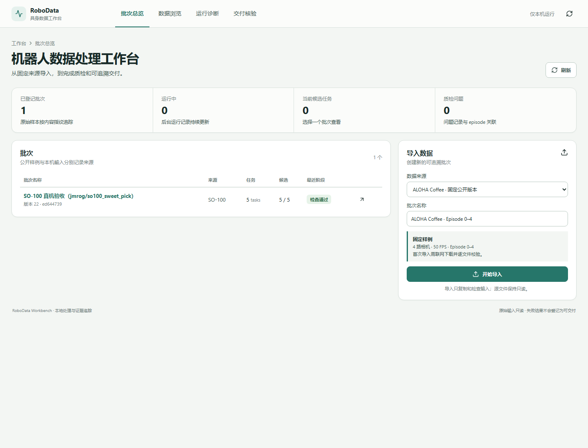
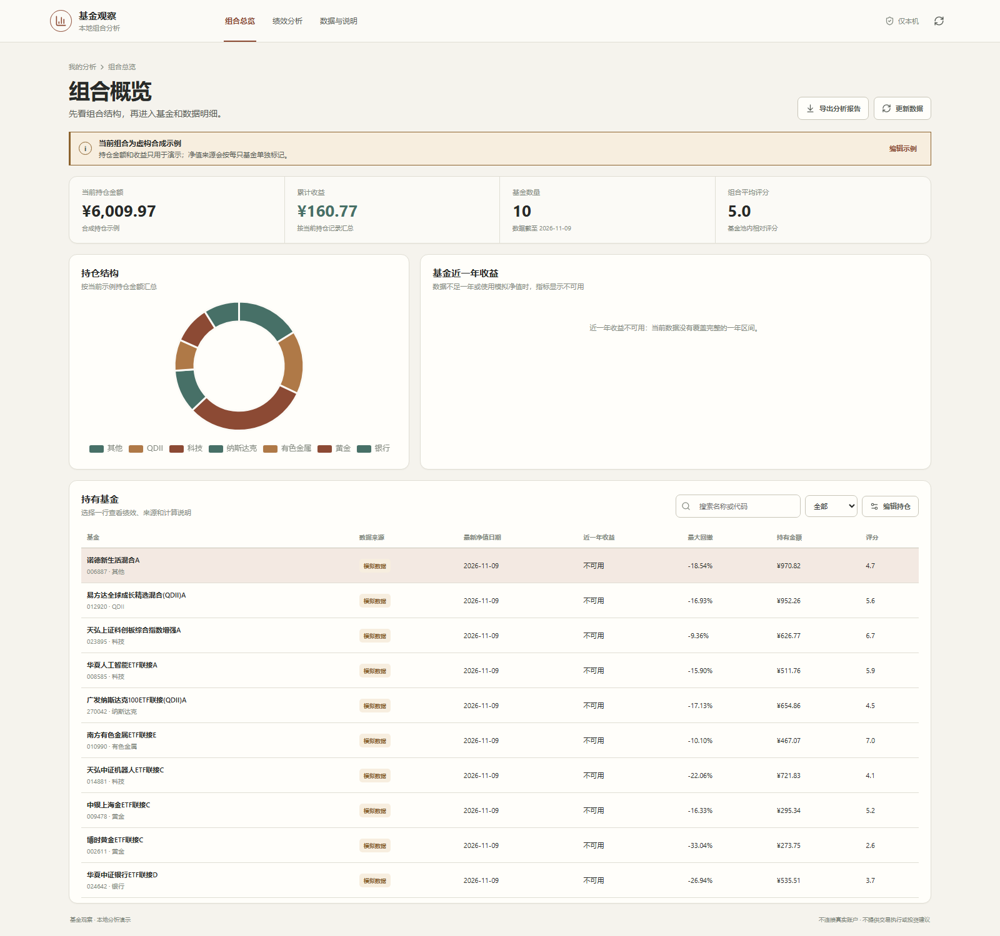

具身智能 · 数据工程 · 本地可复现
两个独立完成的本地工程作品。主项目打通公开机器人数据集的多相机质检、格式转换与独立验包；副项目把数据来源与失效状态做成看得见的分析界面。两者共通的一点：每个结论都能回到可核对的证据。
固定来源的公开机器人数据集，进入本地工作台后经过检查、转换、打包和独立验包。Python 负责业务与数据处理，浏览器只负责浏览与呈现。


把净值来源、回退过程与失效指标做成界面的一部分。缺失数据明确显示「不可用」，不伪装成零收益。

两仓文档与发布说明都按这个口径写。把边界写清楚，比把功能说满更有用。
| 追问 | 证据入口 |
|---|---|
| 数据来自哪里？ | 批次总览的固定版本、许可与来源信息；逐项校验见 v0.6.0 验收记录。 |
| 多相机如何检查？ | Episode 浏览器的逐路检查状态，以及验收记录中的视频、帧数与时间映射结果。 |
| 转换用了官方格式吗？ | 交付核验的官方 LeRobot 离线加载记录与数据字典；格式读写由官方库完成。 |
| 失败时会怎样？ | 运行诊断、失败用例与验收记录中的登记门禁；失败运行不会成为可交付产物。 |
| 这证明机器人或模型有效吗？ | 不证明。验收范围是数据读取、逐路检查、格式转换与交付。 |
界面本身需要本机启动；本页提供的是无需安装即可核对的入口与证据。
# 具身数据平台（Windows / Python 3.12 / Node.js 24 / uv） uv sync --locked cd frontend && npm ci && npm run build && cd .. .\启动工作台.cmd # http://127.0.0.1:8765/ # 基金助手（默认离线合成演示） .\启动基金助手.cmd # http://127.0.0.1:8766/
具体步骤、首次安装脚本与复现验收命令见两仓 README。旧版 Streamlit 入口保留为回退；历史逐节点截图与 v0.4.0 验收报告见 归档页。